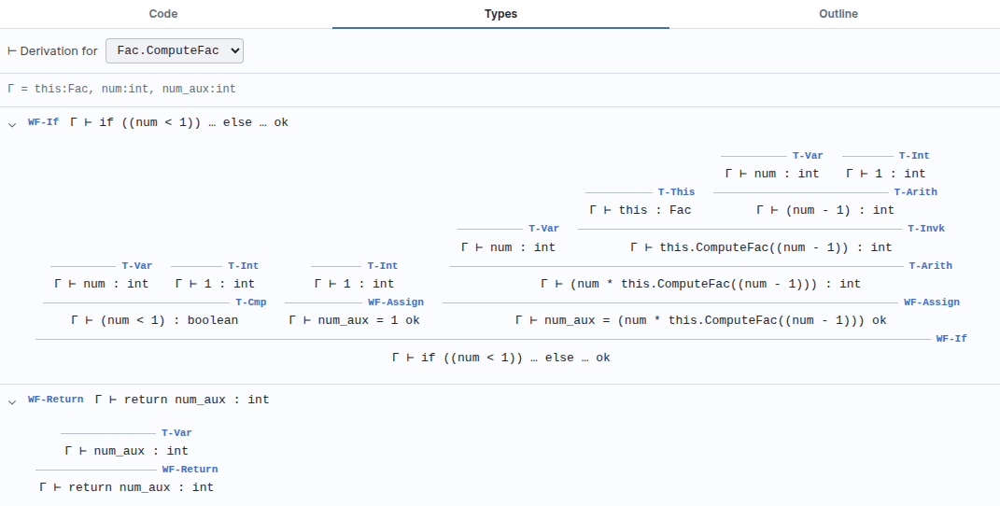

A type system that tolerates unfinished work
The whole workspace is re-checked on every edit. The design problem that creates is not speed — it is that a program under construction is nearly always ill-typed, and a checker that shouts about it is useless. B-MJ solves that with a hole type.
Three layers
| Layer | Responsible for |
|---|---|
Ty grammar |
What a type is: int, boolean,
String, int[], String[], class types, method
arrows, Top / Bottom bounds, and the hole type. |
| Class table | Collecting names and members, resolving extends (with cycle
detection), and deciding nominal subtyping. |
| Checker | Statement and expression rules, override checking, duplicate detection. |
Checking is debounced, and only the program reachable from the Goal block is examined
— detached scratch blocks stay quiet.
The hole type
A block whose type cannot yet be determined — an empty socket, an unfinished expression — gets a first-class hole type, in the style of the Hazel language. A hole is consistent with everything.
The practical consequence is that errors do not cascade. If you have not yet filled in the condition
of an if, that one block is incomplete; the branches, the enclosing method and the rest
of the class are still checked normally and still report their own real problems. Without hole types
a single empty socket near the root would paint the entire program red and bury whatever you
actually wanted to know.
This is the type-system counterpart of B-Lambda treating a partly built term as expected rather than erroneous. Both languages are built on the assumption that you will spend most of your time looking at a program that is not finished yet.
Classes and subtyping
MiniJava has single inheritance and no interfaces, so subtyping is nominal: class
B is a subtype of A if it declares extends A, transitively.
Structural similarity counts for nothing.
The class table resolves the extends graph and detects cycles. A class
hierarchy that loops is reported as a problem rather than sending the checker into infinite
recursion — worth knowing, because it is easy to produce by accident when renaming
classes.
Duplicate detection catches the other common structural mistakes: two classes with the same name, two fields with the same name in one class, two methods with the same name (MiniJava has no overloading), or two parameters sharing a name.
Override checking
When a subclass declares a method that its superclass already has, B-MJ checks the signature the standard way:
| Part | Rule | Why |
|---|---|---|
| Parameters | Invariant — the types must match exactly | A caller holding a supertype reference must be able to pass what the supertype accepted |
| Return type | Covariant — may be a subtype of the overridden return | A caller expecting the supertype's result is still satisfied by a more specific one |
The Shapes (Inheritance) example is built around this: a hierarchy where overriding is the point, so you can edit a signature and watch the diagnostic appear.
The Typing tab
The Inspector's Types tab picks a method from a dropdown — main plus every
C.m in the program — shows its context Γ once, and lists its statements as
Γ ⊢ s ok rows. Each row expands into a classic premises-over-a-bar proof
tree.

main. Each row starts collapsed;
the chevron opens the derivation.Expanded, a method of any substance produces a full tree:

Fac.ComputeFac fully expanded, with
Γ = this:Fac, num:int, num_aux:int. Statement rules (WF-*) sit
over expression rules (T-*).Every judgement in the tree is a button: clicking it selects and centres the block that judgement is about. That is the fastest way to get from “this premise looks wrong” to the block responsible.
Both come from the same walk of the program. The checker builds a derivation — rule, judgement, premises, note — alongside every diagnostic it emits, so the proof tree and the Problems list are two renderings of one result rather than two analyses that might drift apart.
Rule names
B-MJ uses two prefixes, and the distinction is the usual one between statements and expressions.
Statements — WF-*
Well-formedness. A statement does not have a type; it is either well-formed in its context or
it is not, so these conclude Γ ⊢ s ok.
| Rule | For |
|---|---|
WF-If |
if / else — condition must be boolean, both branches
well-formed |
WF-Assign |
Assignment — the right-hand type must fit the variable's |
WF-Print |
System.out.println — accepts int or
String |
WF-Return |
The method's return value against its declared type |
Expressions — T-*
These conclude a type: Γ ⊢ e : τ.
| Rule | For |
|---|---|
T-Var |
A variable, looked up in Γ |
T-Int |
An integer literal |
T-This |
this, at the enclosing class type |
T-Arith |
Arithmetic on two ints |
T-Cmp |
Comparison, giving boolean |
T-Invk |
A method call, against the receiver's class |
T-New |
new C(), at type C |
B-Lambda has only T-* rules, because
the λ-calculus has no statements — everything is an expression with a type. MnL
goes the other way and enriches the judgement itself to
Γ ⊢ term : Category ⊗ Type, because there the block's
grammatical category is also being checked.
The Problems tab
Diagnostics surface twice: as warning icons on the offending blocks, and in the bottom panel's Problems tab, described there as Type-checker diagnostics from the current block program. Clicking an entry selects and centres its block.
When the program checks, the tab says so plainly: No problems: the program type-checks.